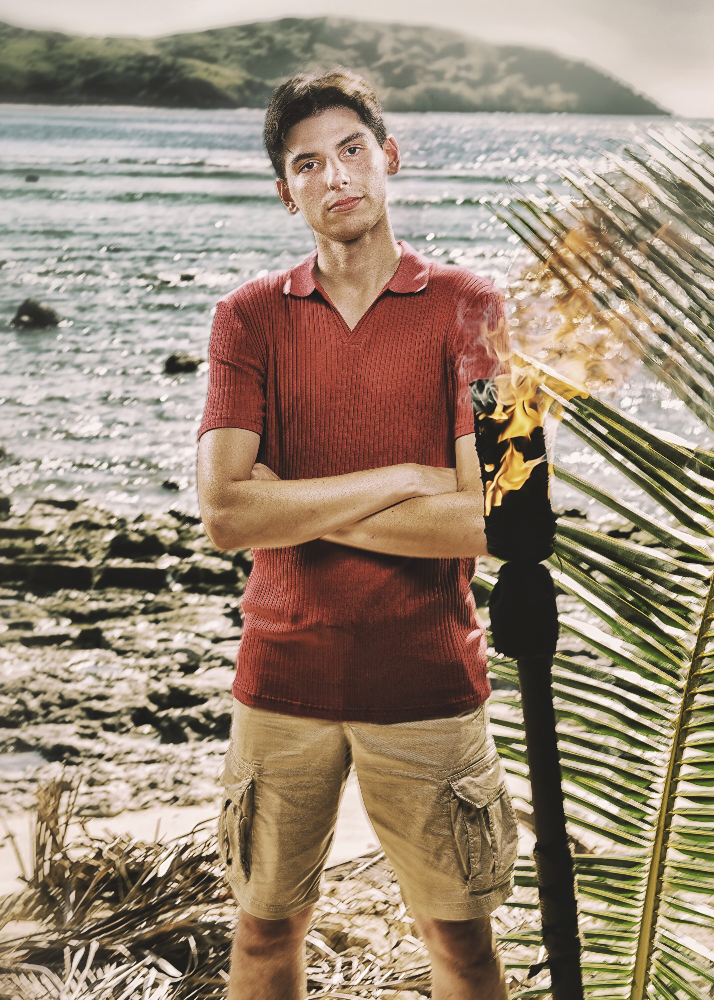

Rizo Velovic
Vatu Tribe
Age
26
Previous Season
49 (4th Place)
Status
Active

Season 49

Season 50
About
Rizo "RizGod" Velovic is the youngest contestant on Season 50 at just 26 years old. Fresh off a 4th-place finish on Season 49, he had a mere two weeks between seasons before returning to Fiji. His youthful energy and confidence earned him the nickname "RizGod" among fans. Rizo has said he wants to be careful not to come across as "bratty, young, cocky" around the older, more experienced players.
Season 50 Game
Rizo is playing back-to-back seasons on the Vatu tribe. With the youngest energy in a cast full of legends and veterans, he'll need to balance his competitive drive with social awareness to avoid becoming a target.